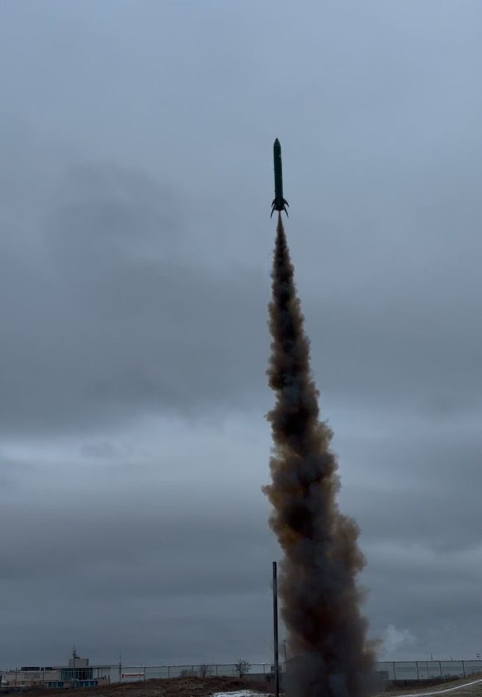
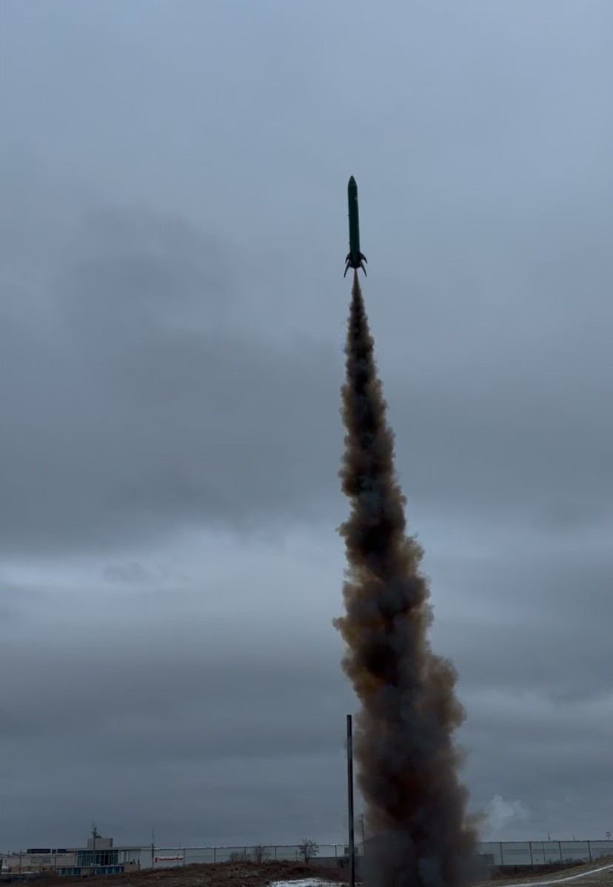

Mars Rocketry Club
 

As part of the Metropolitan Aerospace Rocket Society (MARS) for the term Fall 2024 and Winter 2025, I collaborated with a team to design, build, and launch a high-powered G-Class solid-fuel rocket from scratch. Our project included the full development cycle—from conceptual design to manufacturing and successful flight.
We engineered a custom avionics bay equipped with a GPS tracking module and used OpenRocket and Onshape to model and simulate the rocket’s performance. Key components were 3D printed, allowing for iterative design and rapid prototyping.
This project deepened my understanding of propulsion, structural dynamics, and systems integration. Working alongside a multidisciplinary team, I gained hands-on experience in solving complex engineering problems while seeing our work culminate in a successful, data-logged launch.
Special thanks to my teammates—Sakif Khandaker, Krish Patel, Clement Sayah—and our mentors for their invaluable guidance.